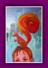
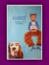
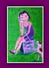

|
|
I
was born in Amsterdam in 1970. From my earliest days,
I spent most of my time with my colouring pencils before
taking drawing lessons at the age of six.
During my degree in decorative arts in Rotterdam, I started working
as a freelance illustrator for urban and underground papers. I'm
also a bit of a writer when the mood takes me. I have an insatiable
appetite for all art forms, and I also try my hand at engraving
and painting.
For
further details, here is an interview by the magazine ARTBook from
22 May 1999.
------
Could you tell us a bit about yourself?
My name is Karen Gijman. I've been living in Amsterdam since I
was a little girl and am currently working as an illustrator,
particularly for the press.
------
How
old were you when you realised that this was what you wanted
to do?
By the time I was six, I already knew that I wanted to be an artist.
It was like a real calling.
------
Did
you follow any particular training courses?
I took a degree in art history at the Erasmus Universiteit in Rotterdam,
so that I'd have a good, solid grounding from a cultural point
of view. As far as the actual illustration side is concerned, I'm
self-taught.
------
Which
people or characters made you want to take up a career
in illustration?
I've never had any heroes or role models, and I still don't today.
I'll give you an anecdote, though, about an anonymous painter.
When I was eight, I went camping with my mother. There was this
painter who spent his whole day doing oil paintings of his partner.
I remember being really impressed by his work and the enormous
amount of paintbrushes and tools that he had. I then had the revelation
when I discovered a book about Degas. That was when I started getting
interested in the lives of painters.
------
What
are your artistic references in the field of illustration?
I don't actually have any references, but there are artists that
I especially like as individuals, such as Jan Sanders and Johan
van Dam, and children's book illustrators like Henriette Willebeek
Le Mair.
------
Are
you influenced by art forms outside illustration,
and do they represent an important source of inspiration?
The cinema is quite a strong visual source, as is contemporary
art. Nevertheless, that's not where I go to draw inspiration when
illustrating. I tend to turn towards reading, such as contemporary
novels whose words conjure up images. My several trips abroad have
also helped me to open my mind to extremely eclectic art forms.
------
What
is the first thing that inspires you?
Reading the text for which I have to do the illustration
immediately conjures up an image. I do a sort
of quick and concentrated summary.

What
types of medium are your drawings intended for?
Mainly fashion magazines, but also newspapers, cultural publications
and children's books. For example, I recently did a series of drawings
for the Cultuur magazine.
------
What
does the job of press illustrator involve?
I work from texts that are given to me by editors. I go along with
what the authors are saying. The illustration is based on a sort
of alliance between the texts and drawings. It means that you have
to understand what is being said while adding something that is
slightly out of step with the text or something that sums up the
contents. The relationship with the title is also very important,
as that is the first thing you see along with the illustration.
You can also play around with the caption of the illustration.
------
Have
you got any plans to work with other types of medium, such
as comic books or children's books?
No, not comic books... The drawings no longer illustrate what is
being said, but actually have to tell the story, which is another
profession altogether. However, I've already worked on children's
books and I really enjoyed it. It's a wonderful medium and extremely
varied.
------
How
would you describe the art of illustration in a few words?
It involves being sensitive to what is being said in the text,
whilst conveying the illustrator's own world. It's all about drawing
together the words and the pictures.
------
Does
it tie in with any particular movement?
There aren't really any artistic trends in the illustration profession.
My drawings can be characterised by their naivety and the lightness
of the lines.
------
Do
you do several sketches before the final drawing?
No, hardly any. Based on the first drawing that comes to mind,
I can correct the expressions and the way that it is framed, but
I rarely go through a series of sketches.
------
What techniques do you use when doing
an illustration?
There are two techniques. One involves wood engravings, which let
you work on things that are strong, synthetic, black and white,
and the other involves oil paintings, which allow you to work with
colour.
------
Do you have any favourite subjects?
Characters, their faces, their expressions, various situations
and a few landscapes.
------
What
subjects would you be dead against illustrating?
I wouldn't like to be a part of anything vulgar or something that
disturbed me from an ethical point of view.
------
All
of your drawings are unique, but do you have
a favourite?
'The little girl with the hoop', because I like the way its light
approach appears to be removed from the subject.
------
What
is the common link with all of your drawings?
Humour!
------
What
project are you working on at the moment?
I've just finished a series of engravings for a fashion magazine,
and I'm currently working on the illustration for a detective novel
for teenagers.
|
| |
 |
 |
|
 |
|
 |
|
Sanne,
2001
|
Australia,
2001
|
Amy,
2001
|
|
Tim
and Lisa, 2000 |
 |
|
 |
 |
|
 |
 |
| Untitled,
2001 |
Fashion,
2002
|
Cat
and Dog,
2002 |
Dream,
2002
|
Women,
2001
|
|
| |
 |
 |
|
 |
|
|
Untitled,
2002
|
|
Untitled,
2002 |
Elisabeth,
2002 |
|
|
|
|
|
|
|
 |
|
|
|
|
|
|
|
 |
|
|
|
|
|
|
De
Amsterdammer - 25 September 1998
Exhibition
at the Van der Lamers gallery - Amsterdam
Karen Gijman has lived in Amsterdam since her earliest days.
She grew up in a traditional environment and is the artist in her
family. Proof of this can be found today with her reputation as
one of the most talented fashion and advertising illustrators.
Her style can easily be recognised, with its melody of brilliant
colours, and realistic expressions mixed with a tinge of naive
mischievousness. Whether sketched or painted in oils, her drawings
are as light as a breath of fresh air and will not leave the spectator
indifferent. A must.
---------
Cultuur
- 6 November 1999
'When
Muller meets Gijman'
The new children's story by the divine Iva van Muller has found
a talented illustrator, whose drawings are in perfect harmony with
the dreamlike world woven by the author.
Karen
Gijman invites us to embark upon a journey in a world
coloured with imperfect lines. The images do not precede
the words, but seamlessly go hand in hand with them.
Their features are a veritable foray into an imaginary
world combining realism, the fantastic and sincerity.
Karen
Gijman's illustration is more than a drawing - it is
sheer poetry.
---------
Grafik-art
- 20 April 2001
'Karen
Gijman - illustration is in the blood'
For Karen, drawing is a real passion. The colours
blend in perfect harmony, the picture comes alive,
she works fast as the fancy takes her, with a series
of details added with a quick movement of her paintbrush.
Her illustrations come across as accessible and disconcertingly
easy.
Her cupboards are overflowing with drawings and the impressive
number of paintbrushes and half-used tubes. Colour is the master
here and breathes life into the features and lavishes a feeling
of warmth in scenes taken from everyday life: over here, there
is a woman getting dressed, and over there, a pair of shoes left
lying on the floor. Karen gives another dimension to the details,
with a timeless decor that highlights the tights, clothes or even
an ageless character.
It is the love for detail that motivates Karen, sitting quietly
on the canopy amongst the plants and cacti, drawing yet another
iron watering can. The magic does its stuff and the greens, reds
and oranges explode on the paper. This plastic way of perceiving
still life would tempt her to sketch a thousand objects in just
as many environments: "I don't find any object mundane, I like
to bring them alive, give them another dimension, put them in the
spotlight or otherwise see them from a more esthetical view". Karen's
almost childlike imagination puts all the everyday things under
the microscope, thereby paying tribute to daily life.
|
|
|
|
|
|
|
|
|
|
|
|
|
|
|
|
|
|
|
| |
|
|
| |
|
|
I've
drawn up a favourites list of all the different
works that have touched me or the different
places that have helped to develop the artist
in me.
My
district: the
canals
I
live in a charming neoclassical house in Beethovenstraat,
in the heart of the maze of waterways that
gives Amsterdam all its charm and character.
A few bridges away and you will find my hang-out,
the Schiller café, whose soft velvet
armchairs are always waiting for me with a
cappuccino or a chat with Gaby, the manager.
---------
My
museum: Stedelijk
Museum -
13 Paulus Potterstraat - Amsterdam
Amsterdam
has an impressive number
of art galleries and museums,
including the city's museum
housing all the most significant
works in contemporary art.
Its collection is continually
updated, with works by Manet,
Cézanne, Kandinsky and Dubuffet,
and even English Pop
Art, all of which have developed
my artistic outlook ever
since I was a young girl.
---------
My
bedside book: The
Alchemist - Paulo
Coelho - 1994
'A
search always begins with beginner's
luck and ends with the testing
of the conqueror'.
Coelho's
extraordinarily optimistic
philosophical fable is an open
invitation for an adventure.
It talks about the initiatory
journey of a young Andalusian
shepherd on his search for
some dreamlike treasure. His
journey leads him to the alchemist
who will show him Knowledge
- of the meaning of life. I'd
recommend it for all those
with a deep-down spirit of
adventure who, like me, wish
to create their own personal
legend.
---------
My
cult film: Trainspotting -
Danny Boyle - 1996
'Choose
life. Choose a job. Choose
a career. Choose a family.
Choose a fucking big television,
choose washing machines,
cars, compact disc players
and electrical tin openers.
Choose good health, low cholesterol
and dental insurance. Choose
fixed-interest mortgage repayments.
Choose a starter home. Choose
your friends. Choose leisurewear
and matching fabrics. Choose
DIY and wondering who the
fuck you are on Sunday morning.
Choose sitting on that couch
watching mind-numbing, spirit-crushing
game shows, stuffing junk
food into your mouth. Choose
rotting away at the end of
it all, pishing your last
in a miserable home, nothing
more than an embarrassment
to the selfish, fucked-up
brats you spawned to replace
yourself. Choose your future.
Choose life. But why would
I want to do a thing like
that? I chose not to choose
life: I chose something else.
And the reasons? There are
no reasons. Who needs reasons
when you've got heroin?' Introduction
Non-conformist,
gritty and fantastical, Dany Boyle's film
is a reaction against a conservative, uniform
and banal society through the depraved
life of four young Scots from Edinburgh.
'Shocking, brutal and with it, Trainspotting
is the Clockwork Orange of the 90s' - Ecran
Noir.
---------
My
travels: Paris -
London - New York
Each capital holds
something special for me:
|
Paris:
If there were to be only one district in Paris,
I'd choose Montmartre, which gives
you the incredible feeling of going back
in time. Its maze of streets has kept all
the poetry and picture-postcard quality of
the Paris of yesteryear, which is where I
particularly enjoy going for a stroll.
|
| |
|
London:
Camden Lock Market has become
a London institution where you can
find furniture, books, jewellery
and all sorts of objects from the
classical to the eccentric. Most
of all, the market is characterised
by its wide range of futurist and
retro clothes. It's a magical place
for those that like to stroll around,
hunt for antiques, confirm their
originality and draw on an endless source
of inspiration.
|
| |
|
New
York:
Between paintings, sculptures, architecture,
design, drawings, photos, illustrations and even
videos, New York's Museum of Modern Art, known
as MOMA,
is a real delight from the first floor all the
way to its shop. My favourite among the rich
collection is the highly intimate exhibition
of the Harlem photographer, Roy de Carava, with
his avant-garde shots of New York and the giants
of jazz.
|
|
|
|
|
|
|